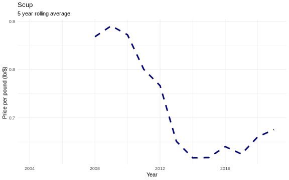
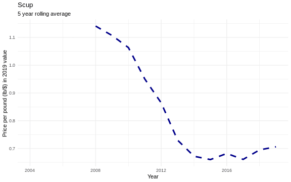

6.4 Revenue
Commercial catch data were downloaded from NOAA FOSS.
6.4.1 Figures
6.4.1.1 Non-inflation adjusted price history of Scup
The calculated price is dollars per pound of reported landings.
Non-inflation-adjusted-price-history
6.4.1.2 Non-inflation adjusted price history of Scup across states in the mid-Atlantic and north-east regions
The calculated price is dollars per pound of reported landings.
Non-inflation-adjusted-price-history-across-states-good-data
Non-inflation-adjusted-price-history-across-states-poor-data 
6.4.1.3 inflation adjusted price history of Scup
The price history adjusted to 2019 values using data from the World Bank inflation data as informed by Inflation adjustment calculations in Principles of Macroeconomics by Gregory Mankiw et al (2014). Adjustments performed using the packages priceR.
inflation-adjusted-price-history
## Generating URL to request all 297 results
## Retrieving inflation data for US
## Generating URL to request all 61 results
6.4.1.4 inflation adjusted price history of Scup across states in the mid-Atlantic and north-east regions
inflation-adjusted-price-across-states-good-data
inflation-adjusted-price-across-states-poor-data
6.4.1.5 Revenue by state over time
revenueFigure 6.18: Scup revenue
Risk
See Methods for risk calculation details.
Rank of change compared to historical, ranked among stocks
Figure 6.19: Scup rank of change in indicator compared to historical, ranked among stocks
Rank of value (magnitude) in each year, compared to other stocks

Figure 6.20: Scup rank of value (magnitude) in each year, compared to other stocks
Rank of value (magnitude) within a single stock, compared to all years
Figure 6.21: Scup rank of value (magnitude) within a single stock, compared to all years
6.4.2 Data
revenue_data